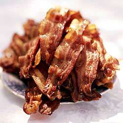

Bacon

Description
For Canadian bacon, use a pork tenderloin. Use the same amounts of ingredients per pound as for pork belly. Increase the temperature of the smoker to 180 degrees after 4 hours, and cook until the internal temperature of the meat is 165 degrees F(70 degrees C).
Ingredients
- 4 pounds raw pork belly
- 1/2 cup packed brown sugar
- 1/4 cup sugar-based curing mixture
- 1 gallon cold water, or as needed
- 1 (10 pound) bag charcoal briquettes
- hickory or apple wood chips
Directions
- In a 2 gallon container, mix together the brown sugar, curing mixture, and water. Submerge the pork belly in the mixture so that it is covered completely. If the meat floats, you can weigh it down with a dinner plate or similar object. Refrigerate covered for six days.
- Light charcoal in an outdoor smoker. Soak wood chips in a bowl of water. When the temperature of the smoker is between 140 and 150 degrees coals are ready. Smoke the pork belly for 6 hours, throwing a handful of wood chips on the coals about once an hour. Store in the refrigerator. Slice and fry as you would with store-bought bacon.
Back to Homepage